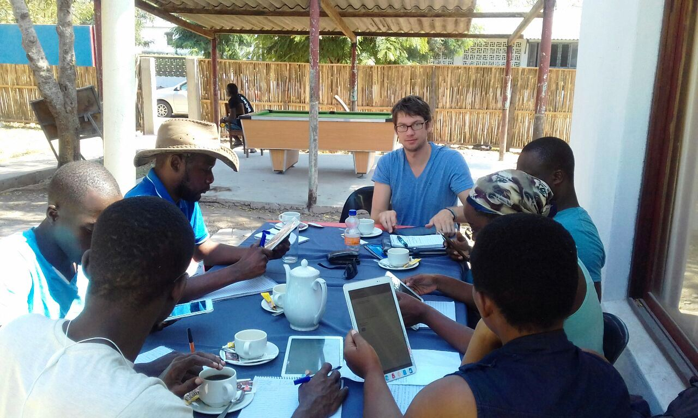

Consultancy
Independent consultancy in development cooperation: evaluation, survey design, statistical sampling, project coordination and training
Since 2016, I have completed Over 20 assignments and over 500 consulting days as an independent consultant and international expert in development cooperation.
My work for GIZ, GFA Consulting Group, UNIDO and other partners combines empirical research with survey design, statistical sampling, monitoring and evaluation. Assignments range from baseline and endline studies to sampling guidance and policy analysis.
I have also worked as a team leader, coordinator and trainer, overseeing data collection and methodological quality and working with project teams and local partners. This includes fieldwork in Mozambique and repeated assignments across different phases of development programmes.
